Genel Bilgiler
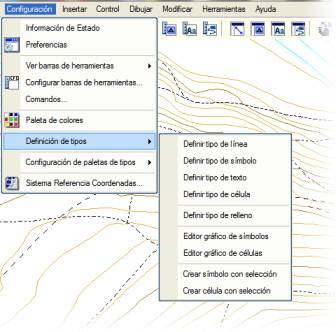Her
obje tipi, aşağıda açıklanan özel menüler aracılığıyla değiştirilebilir veya oluşturulabilir. Bu sayede
kullanıcı, ihtiyaçlarına göre özel bir kütüphane yapılandırabilir.

|
Kullanıcı
yeni bir obje tipi oluşturduğunda, türü ne olursa olsun, yüksek tip numaraları kullanması tavsiye edilir. Çizgiler, semboller ve hücreler için 5000'den, yazılar için ise 500'den büyük numaralar kullanılmalıdır. Bunun nedeni, program kütüphanesine yeni versiyonlarla birlikte sürekli yeni tipler eklenmesi ve bu tiplere belirtilen numaralardan daha düşük numaralar atanmasıdır. |
Yeni tipleri değiştirmeye veya oluşturmaya olanak tanıyan menülere Ayarlar menüsünden erişilir.
Çizgi Tipi Tanımlama
Yeni bir çizgi tipi oluşturmak veya mevcut birini değiştirmek için Ayarlar → Tip Tanımları → Çizgi Tipi Tanımla menüsüne gidilmelidir.
Bu seçenek, kütüphanedeki çizgi tiplerini interaktif olarak tanımlamayı sağlayan ÇİZGİ STİLİ EDİTÖRÜ menüsünü açar:
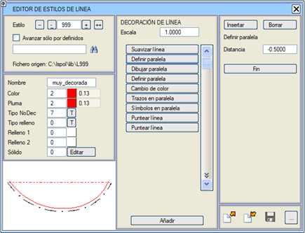
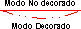Bir
gezgin (navigator), tanımlı farklı çizgi tiplerini veya stillerini görselleştirmeyi sağlar. Bu tipler,
iletişim kutusunun sol alt kısmında gösterilir. Üst kısmın çizginin Detaylı Gösterim modundaki temsiline, alt kısmın ise Basit Gösterim modundaki temsiline karşılık geldiğini unutmayın. Gezgin aşağıdaki kontrollere sahiptir:
|
Tiplerin başına git (tip 0)
|
|
Önceki tipe git
|
|
Sonraki tipe git
|
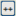
|
Tiplerin sonuna git (tip 9999)
|

|
Belirtilen adı içeren tipleri aramayı sağlar
|
Eğer Sadece tanımlı olanlarda ilerle seçeneği işaretlenirse, yukarıdaki kontroller sadece mevcut tipler üzerinde çalışır, böylece boş veya tanımlanmamış tipleri atlar.
Bir çizgi stilini düzenlemeyi sağlayan diğer seçenekler şunlardır:
Ad
|
Bu,
stil adıdır. Boşluk içermeyen bir veya daha fazla karakterden oluşan bir kelime olup, tip seçim menülerinde
tanımlayıcı ad olarak kullanılır.
|
Renk
|
Kullanılan
renk paletine göre çizginin renk numarası ve kalınlığı.
Renk numarasının sağındaki kutucuğa tıklandığında,
o an yüklü olan renk paleti açılır.
|
Çizim Kalemi
|
Yazdırma modunda veya Kalemler modunda mevcut paletle gösterim için aynı işlem geçerlidir.
|
Basit Göst. Tipi
|
Basit Gösterim modunda sunum için tiplerden birinin seçimi. İzin verilen tipler 0 ile 7 arasında bir sayıdır. [T] düğmesine basıldığında bir seçim menüsü açılır.
|
Tarama Tipi
|
Eğer
çizgi, içini dolduran tiplerden biriyse, burada
benzer şekilde uygulanacak tarama tipi seçilir. Varsayılan olarak,
bir çizginin tarama tipi 0'dır (taramasız). Diğerleri: 1 düz dolgu, 2 yatay tarama 1 mm, vb.
"Maskeleyici düz dolgu" (-1) adında bir tarama tipi mevcuttur. Bu durumda,
çizgilerin taramaları her zaman çizgilerin kendisinden önce çizilir,
böylece taramalar birbirini örtebilir ama asla çizgileri örtemez. Bu tarama tipi, tüm
çizgiler çizildikten sonra işleme girer, bu yüzden onları örter, ancak sembolleri ve yazıları
örtmez. Örneğin, bir boykesit şablonunda sanat yapılarını çizmek için kullanılabilir, böylece şablon çizgilerini örter.
|
Tarama Kalemi 1
Tarama Kalemi 2
|
Tarama yapmak için kullanılacak renk/kalem indeksi. İki
kalem tanımlanır çünkü bazı taramalar çifttir: bir kalemle düz dolgu artı farklı bir kalemle tarama. Basit taramalar
sadece 1 numaralı tarama kalemini kullanır.
|
3B Katı Model
|
Bu değer, Virtual 3D® modülünün
katı model görüntüleri oluştururken otomatik olarak işlediği çizgileri (örneğin otokorkuluklar,
yol çizgi işaretleri, korkuluklar vb.) tanımlamak için kullanılan bir indekstir. Değer, o çizgiyle ilişkilendirilmiş katı modelin numarasıdır.
Bir
çizgi tipine, kendi boyunca çizilecek bir katı model atandığında,
farklı geometri, aralık ve
renge sahip 2 profil tanımlanabilir. Ayrıca herhangi bir parametre ile 2 adet direk de tanımlanabilir.
[Düzenle] ile, tanımlanmakta
olan çizgilere atanan parametrik katı modeli düzenlemeye izin verilir.
Düğmeye basıldıktan sonra, parametrik katı modelin bir profili ve bir OpenGL penceresinde 3B gösterimi görüntülenir:
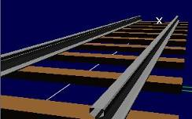
[Çizgi profilini düzenle]:
Çizgi boyunca süpürülecek (extrude) profili çizmek için Istram vektör menüsüne erişim.
Değerler Mesafe ve Kot ile verilir.
Üçüncü sütunda, çizgi segmentinin
çizilip çizilmeyeceğini belirtmek için bir M/D alanı sunulur. M/D = 0 ise segment
çizilmez. 1'e eşitse, segment çizilir. Bu etki,
yan menüdeki GRAFİK'e erişerek grafiksel olarak da elde edilebilir.
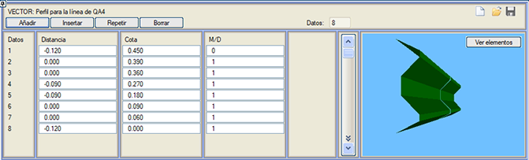
- Segment Aralığı: Profilin süpürülmesi sırasında bırakılan boyuna boşluk mesafesi.
- Segment Uzunluğu: Sürekli süpürme işleminin boyuna mesafesi.
- Kot Farkı: Çizgi kotuna göre düşey öteleme mesafesi.
- Renk: Çizgi profilinin süpürülmesiyle oluşturulan yüzeyin rengi.
- Ölçek: Çizgi profilinin süpürülmesine uygulanan ölçek.
- Direkli: Çizgi boyunca tekrarlanan tekil elemanların olup olmadığını belirtir.
- Mesafe ile yerleşim / Köşe noktalarına yerleşim: Direklerin
yerleşiminin boyuna mesafe ile mi yoksa çizimdeki çoklu doğruyu tanımlayan her köşe noktasına
yerleştirilerek mi yapılacağını belirtir.
- Prizma tanımı / Hücre tanımı: Tekil elemanın basit bir prizma ile mi yoksa bir hücrede saklanan 3B bir geometri ile mi tanımlandığını belirtir.
- Enine mesafe: Direğin çizgiden yanal veya dik ayrılma mesafesi.
- İlk Eleman Mes.: İlk direğin çizginin başlangıcından boyuna mesafesi (sadece mesafe ile yerleşimde geçerli).
- Aralık: Direkler arası boyuna mesafe (sadece mesafe ile yerleşimde geçerli).
- Çizgiyi direğe kadar uzat:
Bu çizgi tiplerini Yol Çizgilerinde kullanırken,
çizginin bir sonraki direğe kadar uzatılıp uzatılmayacağını, böylece orada sonlanmasını
isteyip istemediğinizi belirtir.
- Renk: Oluşturulan prizmanın rengi.
- Boyut (Eksen Yönünde): Direğin boyuna boyutu.
- Enine boyut: Direğin enine boyutu.
- Yükseklik: Direğin yüksekliği.
- Derinlik: Direğin çizgi kotuna göre derinliği.
- Hücre tipi: Hücrenin kimlik numarası (sadece hücre ile tanımda geçerli).
|

|
Bir çizginin Renk
özelliği (hem Ekran modunda hem de Yazdırma modunda),
tipinden bağımsız olabilen tek özelliktir. Yani bir çizgi,
ait olduğu tipten bağımsız bir renk gösterebilir. Bu durumda,
'tipe göre renk' yerine 'özel renk' atanmış olduğu söylenir ve bu nitelik, çizginin özellikler
penceresi aracılığıyla ayarlanır.
Bu, örneğin DXF veya DWG formatında bir dosya içe aktarıldığında ve belirli bir katmandaki çizgilerin belirli bir EDM tipine geçmesi ancak orijinal rengini koruması istendiğinde kullanışlıdır.
|
Tanımlama Komutları
İletişim kutusunun ÇİZGİ DETAYLARI başlıklı orta bölümünde, o çizginin o an tanımlı olan oluşturma ve gösterim komutlarının bir özeti sunulur.
Bir çizgi stilini tanımlayan komutlarda
kullanılan boyutlar, çalışma ölçeğinden
bağımsız olarak çizim milimetresi cinsindendir. Ölçek
alanında belirtilen ve varsayılan olarak 1.0000 olan değer, hepsine uygulanan ölçeği belirler.
[Ekle] düğmesi, çizginin
tanımı için yeni bir komut
oluşturur ve mevcut komutları içeren bir seçim tablosu açar.
Bu komutlar, tanımlandıktan sonra orta tabloya eklenir.
İçlerinden birini içeren düğmeye tıklandığında, o alt pencerenin [Bitir]
tuşuna basılana kadar sahip olduğu parametreler değiştirilebilir. Üst kısımda bulunan iki düğme ayrıca düzenlenmekte olan komutu silmeye veya mevcut komutun önüne bir komut eklemeye olanak tanır.
Bir çizgi tipinin tanımı için olası komutlar şunlardır:
Çizgi Çiz
|
Çoklu doğrunun çizimini emreder.
|
Çizgiyi Yumuşat
|
Çoklu doğruyu, kübik bir interpolanta göre yumuşatılmış bir eğriyle değiştirir.
|
Paralel Tanımla
|
Mevcut
çoklu doğruyu bir paralele kopyalar. Sağdaki tabloda
paralelin mesafesini (sağa doğru pozitif) girmek için bir düğme açar.
|
Renk Değiştir
|
Değişiklikten sonraki çizgi komutları için yeni renk ve çizim kalemi seçer.
|
Paralel Çiz
|
Daha önce tanımlanan paralel çizgiyi çizer.
|
Çizgi Üzerine Semboller
|
Orijinal
çizgiyi (veya bu komuttan önce yumuşatma komutu varsa yumuşatılmış çizgiyi) bir
sembol dizisi olarak gösterir. Sağda açılan tabloda şunlar tanımlanır:
- Kullanılacak sembol tipi (kütüphanedeki S0 ila S9999 serisinden).
- İlk sembolün çizginin başlangıcına olan mesafesi.
- Ardışık semboller arasındaki boşluk.
- Sembolü kendi boyutundan farklı bir boyutta göstermek için uygulanacak ölçek.
- Çizim sırasında kullanılacak renk. 0 rengi, sembolün kendi tanımlı renginin kullanılacağını belirtir.
- Çizim Kalemi. Yazdırma modunda gösterim için kalem numarası.
|
Paralel Üzerine Semboller
|
Son tanımlanan paraleli bir sembol dizisi olarak gösterir. Parametre tablosu, Çizgi Üzerine Semboller için açıklananla aynıdır.
|
Çizgi Üzerine Segmentler
|
Ana çizgiyi, segment ve boşlukların bir dizisi olarak gösterir. Tanımlama parametreleri şunlardır:
- Başlangıç mesafesi: Çizginin başlangıcından ilk segmentin başlangıcına olan mesafe.
- Segment uzunluğu.
- Ardışık segmentler arasındaki boşluk.
|
Paralel Üzerine Segmentler
|
Önceki durumun aynısı, ancak son tanımlanan paralele uygulanır.
|
Çizgiyi Noktala
|
Çizginin içini düzenli bir nokta ağına göre doldurur.
|
Paraleli Noktala
|
Aynı işlem, ancak son tanımlanan paralelin içini doldurur.
|
Alan İçine Sembol Serpiştir
|
Kapalı bir çizginin oluşturduğu alanı sembollerle doldurmayı sağlar. Aşağıdaki parametreleri kabul eder:
- Sembol tipi.
- Semboller arası ortalama mesafe.
- Konum varyasyonu (semboller bu mesafe ile belirlenen bir maksimuma kadar rastgele hareket ettirilecektir).
- Açısal varyasyon (semboller bu mesafe ile belirlenen bir maksimuma kadar rastgele döndürülecektir).
- Ölçek.
- Renk.
- Çizim Kalemi.
- Mod, şu olabilir:
0: BÜTÜN. Ekleme noktası içerideyse, sembol çizgiyi kesse bile bütünüyle çizilir.
|
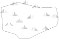
|
1: KIRPILMIŞ. Ekleme noktası dışarıda olsa bile, sembolün çizgi içinde kalan kısmı çizilir.
|
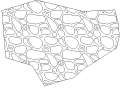
|
2: TAMAMI İÇERİDE. Sadece tamamen çizginin içinde kalan semboller çizilir.
|
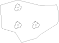
|
|
Paralel Alana Sembol Serpiştir
|
Aynı işlem, ancak son tanımlanan paralelin içini doldurur.
|
 düğmesi, düzenlenmekte olan çizgi tipinin durumunu kütüphanedeki L# dosyasına (burada # stil veya tipin numarasıdır) kaydeder. Eğer dosya zaten
mevcutsa, üzerine yazmak için onay ister. Ana
kütüphanenin kazara değiştirilmesine karşı bir koruma olarak, üzerinde çalışılan çalışma dizininin bir alt dizini olan ve yerel kütüphaneyi içeren bir \LIB klasörünün bulunması önerilir. düğmesi, düzenlenmekte olan çizgi tipinin durumunu kütüphanedeki L# dosyasına (burada # stil veya tipin numarasıdır) kaydeder. Eğer dosya zaten
mevcutsa, üzerine yazmak için onay ister. Ana
kütüphanenin kazara değiştirilmesine karşı bir koruma olarak, üzerinde çalışılan çalışma dizininin bir alt dizini olan ve yerel kütüphaneyi içeren bir \LIB klasörünün bulunması önerilir.
|
Eğer bu pencere, bir çizginin
tanımında değişiklikler yapıldıktan sonra kaydedilmeden kapatılırsa, bu değişiklikler
mevcut program oturumu boyunca geçerli kalır; ancak
program durdurulup yeni bir oturum başlatıldığında, kütüphanelerdeki
tanımlara geri dönülür ve bu değişiklikler kaybolur. Bu, bir çizginin
görünümünü sadece ekranda görmek veya geçici olarak değiştirmek amacıyla bir paftayı
yazıcıya göndermek için kullanılan yöntemdir. |
düğmesi, numarası belirtilen
tipin özelliklerini mevcut tipin üzerine kopyalar. Kopyalama bellekte yapılır, bu yüzden
kalıcı hale getirmek için daha sonra düğmesine basmak gerekir.
düğmesi ile, mevcut
tipin özelliklerini belirtilen numaranın üzerine kopyalamak mümkündür ve ayrıca bu
yeni numarayı bellekteki düzenlemelerde mevcut numara olarak ayarlar, bu yüzden
kalıcı hale getirmek için daha sonra düğmesine basmak gerekir.
 simgesi ile, düzenlenmekte olan çizgi tipini ikinci veya üçüncü kütüphaneye kaydetmek mümkündür. simgesi ile, düzenlenmekte olan çizgi tipini ikinci veya üçüncü kütüphaneye kaydetmek mümkündür.
Tarama Tiplerinin Tanımlanması
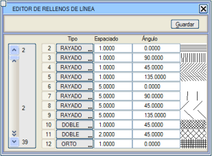Ayarlar → Tip Tanımları → Tarama Tipi Tanımla seçeneği, içini dolduran herhangi bir çizgi tipine atanabilen tarama tiplerini (düz ve
çizgili) tanımlamak için bir menü açar.
0 (taramasız) ve 1 (düz dolgu) tipleri
değiştirilemez. Diğerleri, toplamda 40'a kadar,
tip, çizgiler arası boşluk ve çizgilerin yönelim açısı seçilerek
tanımlanabilir. Tablodaki ilk 10 değer
programda önceden tanımlanmıştır.
[Kaydet] düğmesi, kütüphanede ISPOL.hat adında bir dosya oluşturur veya günceller. Bu dosyanın içeriği ASCII formatında bir dosya olduğu için manuel olarak da düzenlenebilir.
Temel tarama tipleri şunlardır:
- DÜZ DOLGU: Tamamen dolu (kalemli çiziciler için tavsiye edilmez).
- ÇİZGİLİ: Boşluk ve açısı belirtilecek paralel çizgiler.
- ÇİFT ÇİZGİLİ: Yataydan ölçülen açıyla çift çizgili tarama.
- DİK AÇILI: Boşluk ve açısı tanımlanabilen dik açılı tarama.
- D_ÇİZGİLİ, D_ÇİFT ve D_DİK: Düz bir
arka plana sahip ve üzerine daha önce tanımlanan taramalardan birinin eklendiği dolgulardır.
Taramanın rengi, çizgi tipi oluşturulurken tanımlanır (düz dolgu artı çizgili tarama durumunda her iki renk de).
Sembol Tipi Tanımlama
Yeni bir çizgi tipi oluşturma veya mevcut birini değiştirme yollarından biri, Ayarlar → Tip Tanımları → Sembol Tipi Tanımla menüsünü kullanmaktır. Diğer bir yol ise grafik sembol editörü aracılığıyladır.
İlk seçenek, çizgi stili tanımına benzer olan ve kütüphanedeki sembol tiplerini interaktif olarak tanımlamayı sağlayan SEMBOL STİLİ EDİTÖRÜ menüsünü açar:
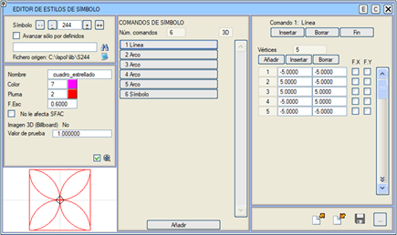
Bir
gezgin, tanımlı farklı sembol tiplerini veya stillerini görselleştirmeyi sağlar. Bu tipler,
iletişim kutusunun sol alt kısmında gösterilir. Gezgin aşağıdaki kontrollere sahiptir:
|
Tiplerin başına git (tip 0)
|
|
Önceki tipe git
|
|
Sonraki tipe git
|
|
Tiplerin sonuna git (tip 9999)
|
|
Belirtilen adı içeren tipleri aramayı sağlar
|
HÜCRE STİLİ EDİTÖRÜNE GEÇİŞ: C düğmesine (pencerenin sağ üst kısmında) tıklandığında, aynı tipteki "HÜCRE STİLİ EDİTÖRÜNE" geçilir.
GRAFİK SEMBOL / HÜCRE EDİTÖRÜNE GEÇİŞ: E düğmesine (pencerenin sağ üst kısmında) tıklandığında, "GRAFİK SEMBOL / HÜCRE EDİTÖRÜNE" geçilir.
Eğer Sadece tanımlı olanlarda ilerle seçeneği işaretlenirse, yukarıdaki kontroller sadece mevcut tipler üzerinde çalışır, böylece boş veya tanımlanmamış tipleri atlar.
Bir sembol stilini düzenlemeyi sağlayan diğer seçenekler şunlardır:
Ad
|
|
Bu,
sembol tipinin adıdır. Boşluk içermeyen bir veya daha fazla karakterden oluşmalı ve tip seçim menülerinde
tanımlayıcı ad olarak kullanılacaktır.
|
Renk
|
|
Aktif renk paletine göre renk indeksi ve kalınlık.
Renk numarasının sağındaki kutucuğa tıklandığında,
o an yüklü olan renk paleti açılır.
|
Çizim Kalemi
|
|
Yazdırma modunda veya Kalemler modunda mevcut paletle gösterim için aynı işlem geçerlidir.
|
Ölçek F.
|
|
Bu tipteki tüm sembolleri etkileyecek ölçek faktörü.
|
SFAC etkilemez
|
|
Eğer
bu seçenek etkinleştirilmişse, sembolün Ayarlar → Tercihler → Durum Bilgisi menüsünde
belirlenen genel sembol boyutu ölçek faktöründen (SFAC) etkilenmediğini
gösterir.
|
3B Görüntü (billboard)
|
|
Virtual 3D® modülü ile ilgilidir, bu sembolün bir billboard gösterimiyle ilişkilendirilip ilişkilendirilmediğini belirtir.
|
Test değeri
|
|
Varsayılan olarak 1 değerini alır,
ancak sembolün sahip olduğu öznitelik değerine bağlı olarak
gösteriminin nasıl değiştiğini görmek için başka değerler verilebilir.
Bu değer sadece mevcut sembol tipini
editörde göstermek için kullanılır, çizimdeki sembol örneklerini etkilemez ve
kütüphanedeki sembol tanımında saklanmaz,
sadece sembol tanımı için bir yardım alanıdır.
|
Tanımlama Komutları
İletişim kutusunun SEMBOL KOMUTLARI başlıklı orta bölümünde, o sembolün o an tanımlı olan oluşturma ve gösterim komutlarının sayısı ve bir özeti sunulur.
[Ekle] düğmesi, sembolün
tanımı için yeni bir komut
oluşturur ve mevcut komutları içeren bir seçim tablosu açar.
Bu komutlar, tanımlandıktan sonra orta tabloya eklenir.
İçlerinden birini içeren düğmeye tıklandığında, o alt pencerenin [Bitir]
tuşuna basılana kadar sahip olduğu parametreler değiştirilebilir. Üst kısımda bulunan iki düğme ayrıca düzenlenmekte olan komutu silmeye veya mevcut komutun önüne bir komut eklemeye olanak tanır.
Bir sembol tipinin tanımı için olası komutlar şunlardır:
Antet
|
Bunun bir antet olduğunu belirten bir komut ekler.
|
Renk Değiştir
|
Sonraki komutların rengini ve çizim kalemini değiştirir.
|
Değişken Metin
|
Sabit olmayan, interaktif olarak değişen parametrik metin.
|
Metin Çiz
|
Bir metin çizer.
|
Metin Satırı
|
Bir metin satırı çizer. Konum, açı ve ölçekli boyut koordinatları burada tanımlanır.
Hizalama için metnin tutma noktalarını gösteren bir panel görüntülenir.
|
Sembol
|
Bunun üzerine bindirmek için başka bir sembolü çağırır.
|
Sayısal Etiket
|
Sembolün öznitelik değerini yazar. Genellikle kot, mesafe, açı vb. etiketlemek için kullanılır.
|
Yay
|
Bir yay oluşturur.
|
Renge Göre Doldur
|
Kırmızı, yeşil ve mavi renkleri belirterek doldurulmuş poligon.
|
Ölçek Faktörü
|
Bu ölçek faktörü, sonrasındaki komutları etkileyecektir.
|
Özel Etiket
|
Plan görünüm seçeneklerinde belirlenen kilometre ayıracını kullanarak, sembolün öznitelik değerini yazan ve kilometre etiketlemesi için kullanılan komut.
|
Mutlak Değer Etiketi
|
Mutlak değerde sayısal etiket. Sayısal Etiket komutuyla aynıdır, ancak varsa eksi işareti yok sayılır.
|
Etiket º ' "
|
Değeri altmışlık sisteme göre derece, dakika ve saniyeye ayırır.
|
Etiket º ' " stil ile
|
Etiket º ' " ile aynıdır, ancak yazı fontları yerine yazı stillerini kullanır.
|
| Etiket º ' " dakika yuvarlamalı | Yuvarla kutusundaki dakikaya yuvarlar. |
Özel Etiket Stil ile
|
Özel Etiket komutu gibidir, ancak yazı stilini seçmeye olanak tanır.
|
Mutlak Değer Etiketi İşaretli
|
Mutlak Değer Etiketi komutu gibidir, ancak eksi işaretiyle birlikte.
|
Çizgi Tipine Göre Doldur
|
Kullanılacak çizgi tipini belirterek doldurulmuş poligon.
|
Çizgi
|
Bir çizgi çizer.
|
Tipe Göre Çizgi
|
Çizgileri sembollerin çizimine entegre etmeyi sağlar, böylece
programın bir çizgi tipine göre Detaylı Gösterim modunda
gösterilirler. Bir sembolün tanımında bu komutun her eklenmesi için şunlar gereklidir:
- Kütüphanedeki çizgi tipi.
- Çizgiyi belirleyen köşe noktaları kümesi.
|
Köşe Anteti
|
Bunun bir köşe anteti olduğunu belirten bir komut ekler.
|
Görüntü
|
Doğrudan
dosyayı belirterek bir sembole bir görüntü gömer. Ayrıca
seçilen görüntüye beyaz, siyah veya her ikisi için şeffaflık sağlar. Bu,
sembollere görüntü eklemeyi ve bu görüntülerin dışının şeffaf olmasını
sağlar.
|
Sayısal Etiket +
özel etiket
|
Sayısal Etiket ve Özel Etiket komutlarını birleştiren bir komuttur. GÜZERGAH PROJELERİ modülünün (.ali dosyaları) bazı plan etiketleme modları tarafından kullanılan S940 ve S947 sembolleri tarafından kullanılır.
S940'ın bir kullanım örneği, özniteliğinde 4002 (eksen 4, kurp 2) değeri ve Z koordinatında 915220.272 (KM) değeri kayıtlı bir nokta için olabilir; bu sembolle planda TE 4001 KM.915+220.272 zinciri etiketlenirdi.
|
Sayısal Etiket +
özel etiket stil ile
|
Sayısal Etiket + özel etiket ile aynıdır, ancak yazı fontları yerine yazı stillerini kullanmaya izin verir.
|
Etiket tam kısmı ayırır
|
Bir sayının tam kısımlarını bölen komut.
Örneğin kilometre kısımlarını bölmek için kullanılır:
Örnekler:
[+] -> çıktı: 15+618.123
[/] -> çıktı: 15/0
Eğer + işareti öne konulursa, her zaman işaret konulmaya zorlanır.
Eğer - işareti öne konulursa, sadece öznitelik negatifse işaret konulur.
Eğer komutun önüne "q" harfi konulursa, tam kısmı ondalık kısımdan ayıran nokta çizilmez.
|
düğmesi, düzenlenmekte olan sembol tipinin durumunu kütüphanedeki S# dosyasına (burada # stil veya tipin numarasıdır) kaydeder. Eğer dosya zaten
mevcutsa, üzerine yazmak için onay ister. Ana
kütüphanenin kazara değiştirilmesine karşı bir koruma olarak, üzerinde çalışılan çalışma dizininin bir alt dizini olan ve yerel kütüphaneyi içeren bir \LIB klasörünün bulunması önerilir.
|
Eğer bu pencere, bir sembolün
tanımında değişiklikler yapıldıktan sonra kaydedilmeden kapatılırsa, bu değişiklikler
mevcut program oturumu boyunca geçerli kalır; ancak
program durdurulup yeni bir oturum başlatıldığında, kütüphanelerdeki
tanımlara geri dönülür ve bu değişiklikler kaybolur. Bu, bir sembolün
görünümünü sadece ekranda görmek veya geçici olarak değiştirmek amacıyla bir paftayı
yazıcıya göndermek için kullanılan yöntemdir. |
düğmesi, numarası belirtilen
tipin özelliklerini mevcut tipin üzerine kopyalar. Kopyalama bellekte yapılır, bu yüzden
kalıcı hale getirmek için daha sonra düğmesine basmak gerekir.
düğmesi ile, mevcut
tipin özelliklerini belirtilen numaranın üzerine kopyalamak mümkündür ve ayrıca bu
yeni numarayı bellekteki düzenlemelerde mevcut numara olarak ayarlar, bu yüzden
kalıcı hale getirmek için daha sonra düğmesine basmak gerekir.
düğmesi ile, düzenlenmekte olan sembol tipini ikinci veya üçüncü kütüphaneye kaydetmek mümkündür.
Grafik Sembol Editörü
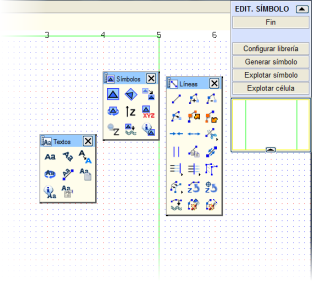Ayarlar → Tip Tanımları → Grafik Sembol Editörü menüsünden
sembollerin interaktif oluşturma faaliyetleri ve bunların çalışma kütüphanesine
yüklenmesi ve indirilmesi kontrol edilir.
Bu seçeneğe erişildiğinde, başlangıçta veri olmadan yeni bir düzenleme ortamı açılır,
böylece interaktif olarak bir sembol oluşturulabilir.
Bunun için açılır menülerden ve ilgili araç çubuklarından
tüm grafik düzenleme araçları erişilebilirdir.
[Kütüphaneyi Yapılandır] seçeneği, kütüphanenin yeniden okunmasını sağlar ve genellikle mevcut ISTRAM®/ISPOL® oturumu sırasında kütüphanedeki bir nesne değiştirildiğinde kullanılır.
[Sembol Oluştur] seçeneği, daha sonra açıklanacağı gibi, ilgili kütüphanede yeni sembolü oluşturmayı sağlar.
[Sembolü Patlat] işlevi, bir bakıma öncekinin tersidir, çünkü bir sembolden EDM objeleri oluşturur. Bunun için şunlar belirtilmelidir:
- Bir sembol dosyasının adı, örneğin S25, S101BASE, vb.
- Kot (eğer ölçeklenebilir bir sembol ise, boyut olarak kullanılır).
- Sembol tarafından çağrılan diğer semboller de patlatılabilir veya sembol olarak eklenebilir.
BİR SEMBOLÜN GRAFİKSEL OLUŞTURMA ÖRNEĞİ
Basit bir örnek olarak, içinde bir metin bulunan bir daireden oluşan bir sembol tasarlanacaktır.
Bunun için merkezi ve bir noktası verilen bir daire oluşturulur. Menüden bu seçenek seçildikten sonra,
merkezini (0,0) noktasına yazmak (koordinatlar X ve Y arasında boşluk bırakılarak, virgül olmadan verilir) ve çevre üzerindeki bir noktayı belirlemek yeterlidir:
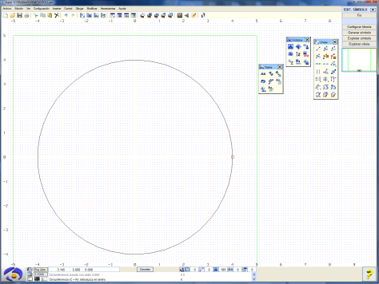
Ardından, metin araç çubuğu kullanılarak,
merkezi (dairenin merkezi) belirtilerek yazı eklenir ve böylece
sembol çizilmiş olur:
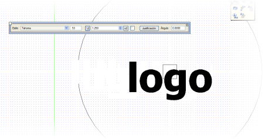
Yapılan çizimi program tarafından tanınabilir bir sembol olarak bildirmek için, [Sembol Oluştur] seçeneği kullanılmalıdır. Bu seçenek aşağıdaki iletişim kutusunu açar:
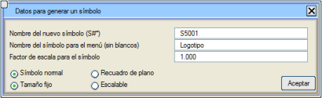
İletişim kutusunda şunlar belirtilmelidir:
- Yeni sembolün adı, örneğin S5001 (5000 veya daha yüksek tip değerleri kullanmanın şiddetle tavsiye edildiğini unutmayın).
- Diğer menülerde tanımlamak için bir sembol adı (boşluksuz).
- Sembol için bir ölçek faktörü.
- Bunun bir normal sembol (bu durumda olduğu gibi) mi yoksa bir pafta anteti (antet) mi olduğu.
- Ve son olarak, bunun sabit boyutlu (bu örnekte olduğu gibi) bir sembol mü yoksa ölçeklenebilir bir sembol mü olduğu.
Ölçeklenebilir semboller, çizim ölçeğine bağlı olarak boyutlarını otomatik olarak değiştirir, bu da onları örneğin boykesit paftalarında ve enkesit paftalarında kullanım için çok kullanışlı hale getirir.
Kutuyu onayladıktan sonra, kullanıcıdan sembol için, ekleme noktasını belirleyecek olan baz noktası istenir. Bu nokta hem grafiksel hem de sayısal olarak girilebilir.
Sembol çizilip oluşturulduktan sonra, kütüphaneyi yenilemek uygundur; bu işlem sadece [Kütüphaneyi Yapılandır] düğmesine basılarak gerçekleştirilir. Ayrıca sembol paletinde görünmesi isteniyorsa, Ayarlar → Palet Ayarları → Sembol Paleti menüsüne gidilmelidir.
Pafta Antetlerinin Oluşturulması
ISTRAM®/ISPOL®,
projenin tamamen bitmiş paftalarını, başka bir ara yazılıma gerek duymadan, çiziciye ve diğer formatlara çıktı vermeyi sağlar.
Bu işi gerçekleştirmek için en önemli ön adımlardan biri,
kişiselleştirilmiş bir antet ile pafta çerçevesi tasarlamaktır.
Aşağıda, bir DIN-A1 pafta çerçevesi örnek olarak alınacaktır.
Sembol tipi tanım penceresi kullanılarak da oluşturulabilmelerine rağmen, bir antet oluşturmanın en rahat yolu grafik sembol editörü aracılığıyladır.
Pencerenin merkezini merkez alan koordinatlar,
milimetre cinsinden ifade edilir. Bu nedenle, pencere görünümünü
yaklaşık çalışma marjlarına (bir DIN-A1 için 594 mm × 840 mm) F2 tuşuyla veya fare tekerleğiyle yakınlaştırarak açmak faydalıdır.
Çizici cihazımızın baskı marjlarını ayarlamak için uygun bir referansa sahip olmak amacıyla,
hem kağıdın hem de baskı alanının kenarlarının milimetrik koordinatlarını belirlemek faydalı olabilir.
Bu verilerle kağıt alanını belirlemeye başlanır.
Doğal olarak, bir pafta çerçevesini geometrik olarak oluşturmak için, kullanıcının seçtiği ISTRAM®/ISPOL® araçlarına göre çok sayıda yöntem mevcuttur. Bunlardan biri bir çizgi oluşturmaktır:
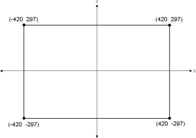Seçilen
ilk noktadan (örneğin sol alt köşe) başlayarak,
@840 0 yazarak artışlar (göreli koordinatlar) verilebilir ve böylece sağ alt nokta elde edilir (X'in 840 mm artması, Y'nin ise sabit kalması).
Başka bir olası yol, kenarlara paralel ve dik çizgiler kullanmak ve çerçeve çizgisini kapatmak için kendisiyle birleştirmektir.
Ardından, kağıdın yazdırılabilir alanı (ciltleme için 2 cm kenar boşluğu ile) aynı yöntemle veya eşdeğer bir yöntemle tanımlanır.
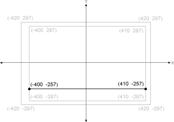
Sayfanın alt kısmına 3 cm genişliğinde bir antet yerleştirilir.
Antetin dört kutucuğu, antetin kenarlarına tutturulmuş dikey segmentler kullanılarak kolayca çizilebilir.
Antet çizgilerinin çizimi bittikten sonra, içine sembol ve metinlerin eklenmesi zamanı gelir.
Metinler söz konusu olduğunda, basılı çizimlerde olduğu gibi görünecek olanlar ile
paftaya göre değişenler (sayfa numarası, proje yazarının adı veya
proje başlığı gibi) arasında ayrım yapılmalıdır.
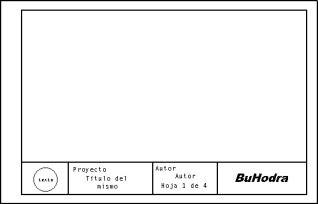Metin araç çubuğu ile, ilgili yazılar oluşturulur ve antete eklenir. Tüm paftalarda tekrarlanacak olan sabit metin örneği olarak, ikinci kutucuktaki "Proje" başlığı kullanılacaktır.
Değişken metinler,
sabit metinlerle aynı şekilde girilir, tek farkları # sembolü ile başlamalarıdır.
Değişken olarak tanımlanan her metin, SAYFALAMA menüsünde, YAZDIRMA bölümünde açıklandığı gibi
değiştirilebilir. Projenin "Başlığı" bu duruma bir örnektir.
Tüm yazılar ve semboller antete eklendikten ve
pafta çerçevesi oluşturulduktan sonra, geriye sadece [Sembol Oluştur] düğmesine basıldığında açılan iletişim kutusuna girilen
son özellikleri tanımlamak kalır:
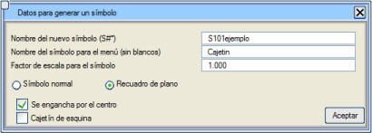
Girilecek veriler şunlardır:
- Yeni sembolün adı,
burada genellikle kullanılan kağıt boyutuna özgü bir ad verilir.
Standart boyutlar için karakteristik adlar benzerdir (DIN-A2 için 102, DIN-A3 için 103, vb.), 105 ise
standart dışı boyutlardaki kağıtlar için ayrılmıştır.
- Diğer menülerde tanımlamak için bir sembol adı (boşluksuz).
- Gerçek boyutlarından oluşturulduğu için bu pafta çerçevesi için 1 olacak olan sembol için bir ölçek faktörü.
- Bu durumda, bunun bir pafta anteti (antet) olduğu belirtilmelidir ve iki seçenek sunulur:
- Eğer antet merkezden tutturuluyorsa, bu şekilde belirtilmelidir (en yaygın durum budur). Aksi takdirde, program baz noktasını isteyecektir.
- Ayrıca, bunun bir köşe anteti olduğunu belirtme imkanı da verilir.
Enkesit veya boykesit çizimi için köşe antetli bir format kullanıldığında,
program bu alanı dikkate alır ve profillerin çizimi için kullanmaz. Eğer aynı formatı
plan harita çizimleri için de kullanmak isteniyorsa,
anteti oluştururken, L35 gibi bir çizgiyle antetin dış çevresi de tanımlanmalıdır. Bu çizginin dolgusu (siyah/beyaz) altındaki herhangi bir
harita bilgisini örter. Sol alt veya sağ alt köşede antetler kabul edilir.
Kütüphaneye temel örnekler olarak S101esq ve S101esqD dosyaları dahil edilmiştir.
Önceki iletişim kutusunu onayladıktan sonra, kullanıcıdan kağıt köşeleri ve çizilebilir alan için karşılık gelen noktalar istenir. Bu noktaların tam hassasiyetle tanımlanması için köşe noktası yakalama modunun kullanılması tavsiye edilir.
Sembol bu şekilde oluşturulmuş olur. Sistem, ilgili kütüphanede iki dosya oluşturur: sembolü içeren S101texto ve çizimi EDM formatında saklayan 101texto.edm (başındaki S olmadan), bu dosya daha sonra diğer antetlerin düzenlenmesinde yeniden kullanılabilir.
Bu, bir pafta çerçevesi oluşturmanın birçok yolundan biridir.
Bir sembol olarak, önceden hazırlanmış grafikleri
EDM formatına dönüştürerek ve daha sonra grafik editör penceresine
blok olarak yükleyerek içe aktarmak mümkündür.
Yazı Stili Tanımlama
Yeni bir yazı tipi (yazı stili olarak da adlandırılır) oluşturmak veya mevcut birini değiştirmek için Ayarlar → Tip Tanımları → Yazı Stili Tanımla menüsüne gidilmelidir.
Bu seçenek, kütüphanedeki yazı tiplerini interaktif olarak tanımlamayı sağlayan YAZI STİLİ EDİTÖRÜ menüsünü açar:
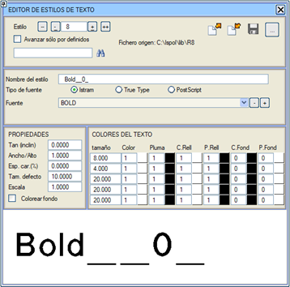
Bir
gezgin, tanımlı farklı yazı tiplerini veya stillerini görselleştirmeyi sağlar. Bu tipler,
iletişim kutusunun sol alt kısmında gösterilir. Gezgin aşağıdaki kontrollere sahiptir:
|
Tiplerin başına git (tip 0)
|
|
Önceki tipe git
|
|
Sonraki tipe git
|
|
Tiplerin sonuna git (tip 9999)
|
|
Belirtilen adı içeren tipleri aramayı sağlar
|
Eğer Sadece tanımlı olanlarda ilerle seçeneği işaretlenirse, yukarıdaki kontroller sadece mevcut tipler üzerinde çalışır, böylece boş veya tanımlanmamış tipleri atlar.
Bir yazı stilini düzenlemeyi sağlayan diğer seçenekler şunlardır:
Stil Adı
|
Bu,
yazı tipinin adıdır: boşluk içermeyen bir veya daha fazla karakterden oluşan bir kelime,
tip seçim menülerinde tanımlayıcı ad olarak kullanılır.
|
Yazı Tipi Türü
|
3 olası yazı tipi türü vardır:
- Istram: Programın
varsayılan olarak program kütüphanesine yüklediği yazı tiplerini
kullanır. 0, 1, 2,... stilleri bu yazı tiplerini kullanır.
- True Type: Program,
başlatıldığında, kullanıcının bilgisayarında yüklü olan bu türdeki tüm yazı tiplerini
okur, böylece burada kullanılabilir olurlar. Bu sayede,
ISTRAM®/ISPOL®'den oluşturulan paftalar,
bir PC'de yaygın olarak yüklü olan yazı tiplerini kullanabildikleri için daha iyi bir görünüme
sahip olabilir. 11, 50, 51,... stilleri bu tür yazı tiplerini kullanır.
- PostScript: PostScript tipi yazı tiplerini kullanır. 110, 113,.. stilleri bu tür yazı tiplerinin kullanım örnekleridir.
|
Yazı Tipi
|
Daha önce belirtilen türdeki tüm mevcut yazı tiplerini gösteren bir açılır menüdür.
|
Tan (eğim)
|
Karakterlerin
eğim açısının tanjantı, doğal dikey konumlarından ölçülür.
Tüm yazı tipleri bu parametre ile "italik" hale getirilebilir.
|
Genişlik/Yükseklik
|
Karakterlerin
genişlik-yükseklik oranı. Varsayılan değer 1.0'dır. 2 değeriyle,
örneğin, karakterler iki kat daha geniş olur ve 0.5 ile
yarıya kadar daralırlar.
|
Karakter Aralığı (%)
|
Karakterler
arası boşluk. 0.0 değeriyle (varsayılan) boşluk normaldir.
0.2 değeri onları birbirinden ayırır ve -0.1 değeri onları
neredeyse birbirine değecek kadar yaklaştırır.
|
Varsayılan Boyut
|
Otomatik
olarak metin oluşturan bazı uygulamalar tarafından kullanılacak varsayılan
boyut. Metinlerin boyutu, çizim ölçeğine göre gerçek metre cinsindendir.
|
Ölçek
|
Söz konusu stille oluşturulan tüm metinlere uygulanacak ölçek faktörü.
|
Sağdaki alt tabloda, metinlerin çizimi sırasında uygulanacak renk ve çizim kalemi indeksleri tanımlanır.
İlk sütunda tanımlanan her bir boyut için bu indeksleri tanımlayan beş satır tuş bulunur.
Son 6 sütun, karakterlerin çizimi için renk ve kalem indeksini; D.Renk ve D.Kalem, yazı tipi kalın (bold) ise dolgu için renk ve kalemi; ve A.Renk ve A.Kalem, Arka planı renklendir seçeneği etkinse arka planı renklendirmek için kullanılır.
Tablo şu şekilde yorumlanır: belirtilen boyuta
kadar (milimetre cinsinden) belirtilen renk, kalem, dolgu rengi ve
dolgu kalemi ile arka plan rengi ve arka plan kalemi uygulanır. Bu şekilde,
aynı yazı stili için artan boyutta metinler oluşturulduğunda,
kullanılacak renk veya kalem numarası atlanır.
Böylece, metnin boyutuyla artan çizgi kalınlığına sahip kalemler veya değişen renkler
seçilebilir. Metne sabit renk indeksleri atamak istendiğinde, en pratik yol,
örneğin renk komutlarının ilk satırına 5000 mm gibi çok
büyük bir boyut bildirmektir; bu şekilde program boyut tablosunu analiz ederek zaman kaybetmez,
çünkü ilk boyut karşılaştırmasında indeksi belirler ve bu da çizmeyi hızlandırır.
düğmesi, düzenlenmekte olan yazı tipinin durumunu kütüphanedeki R# dosyasına (burada # stil veya tipin numarasıdır) kaydeder. Eğer dosya zaten
mevcutsa, üzerine yazmak için onay ister. Ana
kütüphanenin kazara değiştirilmesine karşı bir koruma olarak, üzerinde çalışılan çalışma dizininin bir alt dizini olan ve yerel kütüphaneyi içeren bir \LIB klasörünün bulunması önerilir.
|
Eğer bu pencere, bir metin veya yazının
tanımında değişiklikler yapıldıktan sonra kaydedilmeden kapatılırsa, bu değişiklikler
mevcut program oturumu boyunca geçerli kalır; ancak
program durdurulup yeni bir oturum başlatıldığında, kütüphanelerdeki
tanımlara geri dönülür ve bu değişiklikler kaybolur. Bu, bir metnin
görünümünü sadece ekranda görmek veya geçici olarak değiştirmek amacıyla bir paftayı
yazıcıya göndermek için kullanılan yöntemdir. |
düğmesi, numarası belirtilen
tipin özelliklerini mevcut tipin üzerine kopyalar. Kopyalama bellekte yapılır, bu yüzden
kalıcı hale getirmek için daha sonra düğmesine basmak gerekir.
düğmesi ile, mevcut
tipin özelliklerini belirtilen numaranın üzerine kopyalamak mümkündür ve ayrıca bu
yeni numarayı bellekteki düzenlemelerde mevcut numara olarak ayarlar, bu yüzden
kalıcı hale getirmek için daha sonra düğmesine basmak gerekir.
düğmesi ile, düzenlenmekte olan yazı tipini ikinci veya üçüncü kütüphaneye kaydetmek mümkündür.
Hücre Tipi Tanımlama
Yeni bir hücre tipi oluşturma veya mevcut birini değiştirme yollarından biri, Ayarlar → Tip Tanımları → Hücre Tipi Tanımla menüsünü kullanmaktır. Diğer bir yol ise grafik hücre editörü aracılığıyladır.
İlk seçenek, sembol stili tanımına benzer olan ve kütüphanedeki hücre tiplerini interaktif olarak tanımlamayı sağlayan HÜCRE STİLİ EDİTÖRÜ menüsünü açar:
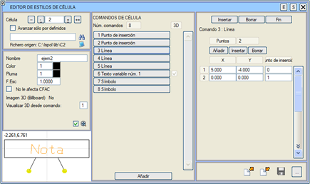
Bir
gezgin, tanımlı farklı hücre tiplerini veya stillerini görselleştirmeyi sağlar. Bu tipler,
iletişim kutusunun sol alt kısmında gösterilir. Gezgin aşağıdaki kontrollere sahiptir:
|
Tiplerin başına git (tip 0)
|
|
Önceki tipe git
|
|
Sonraki tipe git
|
|
Tiplerin sonuna git (tip 9999)
|
|
Belirtilen adı içeren tipleri aramayı sağlar
|
SEMBOL STİLİ EDİTÖRÜNE GEÇİŞ: S düğmesine (pencerenin sağ üstünde) tıklandığında, aynı tipteki "SEMBOL STİLİ EDİTÖRÜNE" geçilir.
Eğer Sadece tanımlı olanlarda ilerle seçeneği işaretlenirse, yukarıdaki kontroller sadece mevcut tipler üzerinde çalışır, böylece boş veya tanımlanmamış tipleri atlar.
Bir hücre stilini düzenlemeyi sağlayan diğer seçenekler şunlardır:
Ad
|
Bu,
hücre tipinin adıdır. Boşluk içermeyen bir veya daha fazla karakterden oluşmalı ve tip seçim menülerinde
tanımlayıcı ad olarak kullanılacaktır.
|
Renk
|
Aktif renk paletine göre renk indeksi ve kalınlık.
Renk indeksinin sağındaki kutucuğa tıklandığında,
o an yüklü olan renk paleti açılır.
|
Çizim Kalemi
|
Yazdırma modunda veya Kalemler modunda mevcut paletle gösterim için aynı işlem geçerlidir.
|
Ölçek F.
|
Bu tipteki tüm hücreleri etkileyecek ölçek faktörü.
|
CFAC etkilemez
|
Eğer bu
seçenek etkinleştirilmişse, hücrenin
Ayarlar → Tercihler → Durum Bilgisi menüsünde belirlenen genel hücre boyutu ölçek faktöründen (CFAC) etkilenmeyeceğini
gösterir.
|
3B Görüntü (billboard)
|
Virtual 3D® modülü ile ilgilidir, bu hücrenin bir billboard gösterimiyle ilişkilendirilip ilişkilendirilmediğini belirtir.
|
Tanımlama Komutları
İletişim kutusunun HÜCRE KOMUTLARI başlıklı orta bölümünde, o hücrenin o an tanımlı olan oluşturma ve gösterim komutlarının sayısı ve bir özeti sunulur.
[Ekle] düğmesi, hücrenin
tanımı için yeni bir komut
oluşturur ve mevcut komutları içeren bir seçim tablosu açar.
Bu komutlar, tanımlandıktan sonra orta tabloya eklenir.
İçlerinden birini içeren düğmeye tıklandığında, o alt pencerenin [Bitir]
tuşuna basılana kadar sahip olduğu parametreler değiştirilebilir. Üst kısımda bulunan iki düğme ayrıca düzenlenmekte olan komutu silmeye veya mevcut komutun önüne bir komut eklemeye olanak tanır.
Bir hücre tipinin tanımı için olası komutlar şunlardır:
Ekleme Noktası
|
Ekleme noktasının X, Y, Z koordinatlarını işaretler. Ayrıca ekleme noktasının tipi de belirtilmelidir: serbest, başlangıç, bağlantı veya nokta başlangıcı (bu son tip, ELSAL2_CEL.ali gibi bazı plan güzergah etiketleme modlarında kullanılır).
|
Ufuk
|
Bu komut aşağıdaki parametreleri alır:
- Daha önce tanımlanmış olması gereken bir çift hücre ekleme noktası.
- Altmışlık derece cinsinden ek bir öteleme.
Hücrenin çizimi için, komutta belirtilen iki
ekleme noktasının oluşturduğu açı hesaplanır ve buna ek olarak belirtilen
öteleme eklenir. Sonuçtaki açı,
bundan sonraki tüm çizim komutlarına uygulanır. Bu şekilde, hücrenin ekleme noktaları
hareket ettirildiğinde, çizimi ilgili noktaların göreceli
yönelimine göre uyum sağlar.
|
Öteleme
|
Bu komut çağrıldığı andan itibaren eksenlerde X ve Y yönünde bir
öteleme oluşturur (bundan sonraki çizgiler ve metinler, orijinal
koordinatlarına kullanıcının belirttiği X ve Y kadar ötelenmiş olacaktır).
|
Sembol
|
Hücreye belirtilen tipte bir sembol eklemeyi sağlar.
|
Çizgi
|
Koordinatları belirtilen ekleme noktasına göreceli olan bir çizgi eklemeyi sağlar.
|
Tipe Göre Çizgi
|
Çizgileri hücrelerin çizimine entegre etmeyi sağlar, böylece
programın bir çizgi tipine göre Detaylı Gösterim modunda
gösterilirler. Bir hücrenin tanımında bu komutun her eklenmesi için şunlar gereklidir:
- Kütüphanedeki çizgi tipi.
- Çizgiyi belirleyen köşe noktaları kümesi.
|
| 3B Çoklu Doğru | Bir 3B Çoklu Doğru eklemeyi sağlar. |
Sabit Metin
|
Sabit bir metin oluşturur. Bu seçenek, asla değiştirilmeyecek bir değişken metinden daha kullanışlıdır.
|
Değişken Metin
|
Sabit olmayan, interaktif olarak değişen parametrik metin.
|
Göreceli Metin
|
Önceki metne göreceli bir konumda oluşturulan metin.
|
Baz Metin
|
Her
zaman tekrarlanacak bir metindir, bu nedenle genellikle
ön ek veya son ek görevi görür. Örneğin, harita üzerinde bir dizi nokta alarak bir
veri tablosu oluşturulurken, noktaları birbirinden ayırmak için
her zaman nokta numarasından önce görünen bir metin, bir ön ek olabilir.
|
Sıralı Numara
|
Artan bir tam sayıya karşılık gelen otomatik metin. Örneğin, bir haritadaki noktaları numaralandırmak için kullanılır.
|
X Koordinatı
Y Koordinatı
Z Koordinatı
|
Hassasiyet'te belirtilen ondalık basamak sayısıyla, hücrenin ekleme noktasının sırasıyla X, Y ve Z koordinatlarını etiketlemeyi sağlar. Bu koordinatlar gerçek zamanlı olarak güncellenir.
|
Ölçek Faktörü
|
Bu ölçek faktörü, sonrasındaki komutları etkileyecektir.
|
Renk Değiştir
|
Değişiklikten sonraki hücre komutları için yeni renk ve çizim kalemi seçer.
|
Renge Göre Doldur
|
Kırmızı, yeşil ve mavi renkleri belirterek doldurulmuş poligon.
|
Çizgi Tipine Göre Doldur
|
Kullanılacak çizgi tipini belirterek doldurulmuş poligon.
|
Sembol Deseni
|
Desen olarak kullanılan bir sembolü, bir ana çizgiye göre ve başka bir kırpma çizgisi kullanarak tekrarlamayı sağlar.
|
3B gösterim, adının yanında 3D yazan hücre komutları için mümkündür.
düğmesi, düzenlenmekte olan hücre tipinin durumunu kütüphanedeki C# dosyasına (burada # stil veya tipin numarasıdır) kaydeder. Eğer dosya zaten
mevcutsa, üzerine yazmak için onay ister. Ana
kütüphanenin kazara değiştirilmesine karşı bir koruma olarak, üzerinde çalışılan çalışma dizininin bir alt dizini olan ve yerel kütüphaneyi içeren bir \LIB klasörünün bulunması önerilir.
|
Eğer bu pencere, bir hücrenin
tanımında değişiklikler yapıldıktan sonra kaydedilmeden kapatılırsa, bu değişiklikler
mevcut program oturumu boyunca geçerli kalır; ancak
program durdurulup yeni bir oturum başlatıldığında, kütüphanelerdeki
tanımlara geri dönülür ve bu değişiklikler kaybolur. Bu, bir hücrenin
görünümünü sadece ekranda görmek veya geçici olarak değiştirmek amacıyla bir paftayı
yazıcıya göndermek için kullanılan yöntemdir. |
düğmesi, numarası belirtilen
tipin özelliklerini mevcut tipin üzerine kopyalar. Kopyalama bellekte yapılır, bu yüzden
kalıcı hale getirmek için daha sonra düğmesine basmak gerekir.
düğmesi ile, mevcut
tipin özelliklerini belirtilen numaranın üzerine kopyalamak mümkündür ve ayrıca bu
yeni numarayı bellekteki düzenlemelerde mevcut numara olarak ayarlar, bu yüzden
kalıcı hale getirmek için daha sonra düğmesine basmak gerekir.
düğmesi ile, düzenlenmekte olan hücre tipini ikinci veya üçüncü kütüphaneye kaydetmek mümkündür.
Bağlantılı Hücreler
Bağlantılı hücreler olarak adlandırılan özel bir hücre türü vardır.
Bu hücrelerin özelliği, bir sonraki hücrelere göre konumlarını referans alan bir ekleme noktası içermeleridir. Bu şekilde oluşturulan hücreler,
sanki tek bir bütünmüş gibi blok halinde hareket etme özelliğine sahip olacaktır. Bloktaki herhangi bir hücre silindiğinde veya kurtarıldığında,
diğerleri kompakt bir blok oluşturmaya devam etmek için yeniden konumlanacaktır.
C12 ve C13 hücre tipleri, bağlantılı hücrelere iki örnektir.
3B Geometri İçe Aktarım Hücresi Oluştur
Hücrelere entegre edilmiş 3B sembolleri görüntülemek için bir erişim yolu,
3B Geometri İçe Aktarım Hücresi Oluştur aracıdır.
Erişim: Ekle → 3B Geometri İçe Aktarım Hücresi Oluştur
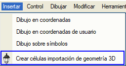
Geometrileri içe aktarmak için bir görüntüleyici içeren bir iletişim kutusu belirir.
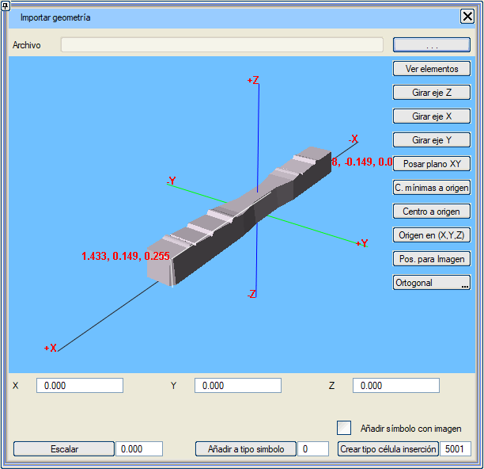
Z ekseninde döndür: nesneyi Z ekseninde 90 derece döndürür.
X ekseninde döndür: nesneyi X ekseninde 90 derece döndürür (güzergah projeleri için, eksen yönüne dik).
Y ekseninde döndür: nesneyi Y ekseninde 90 derece döndürür (güzergah projeleri için, eksenin ilerleme yönü ve doğrultusu).
Ölçekle: seçilen geometriye, sembole istenen boyutları uygulamak için bir ölçek faktörü uygular.
Görüntü için Konum: Bu düğmeye tıklayarak 3B nesnemizin farklı dik görünümleri arasında geçiş yaparız. Eğer [ ] Görüntü ile sembol ekle seçeneğini seçersek,
bu dik görünüm, nesnenin boyutlarıyla ve ekleme noktası Xo
Yo Zo ile çakışacak şekilde haritadaki sembole eklenecektir.
Sembol tipine ekle: Geometri,
alandaki numaraya göre Sxxxx olarak kütüphaneye kaydedilir. Eğer sembol yoksa oluşturulur, varsa,
3B nesne mevcut sembole eklenir.
Ekleme için hücre tipi oluştur: Önceki alanda oluşturulan veya belirtilen sembolü içeren hücre oluşturulur.
Nesne
Xo,Yo,Zo değerleri değiştirilerek taşındığında, geometri
.3DO formatında saklanır. Özelliklere sahip IFC dosyaları içe aktarıldığında,
.3DO dosyası bu özellikleri koruyacaktır.
Grafik Hücre Editörü
Sembollere benzer şekilde, yeni hücreleri grafiksel olarak oluşturmak veya değiştirmek de mümkündür.
Bu durumda kullanılacak seçenek Ayarlar → Tip Tanımları → Grafik Hücre Editörü'dür ve grafik sembol editörüne benzer şekilde çalışır:
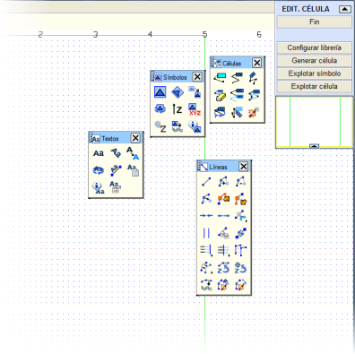
|